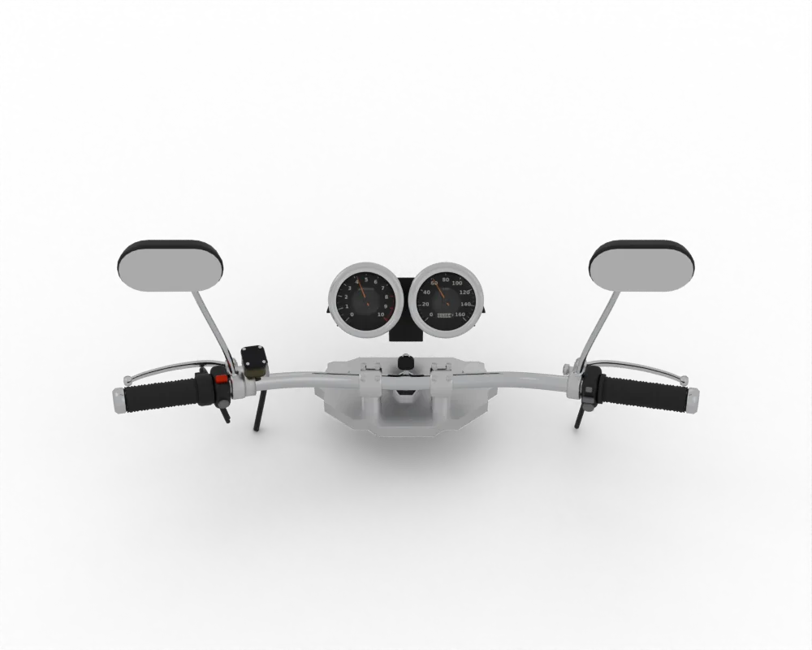

Spare parts / Spiro / Ekon / Mirrors
Spiro Ekon mirrors
Mirrors for the Spiro Ekon: when to replace it, what it costs, where to buy it and how to fit it.

3D renderCheck the specification. Brake and drive details for this model vary by market; confirm yours before you buy.
Where to buy
- Google ShoppingSearch results for this partgoogle.com ↗
- eBaySearch results for this partebay.com ↗
- AliExpressSearch results for this partaliexpress.com ↗
- JumiaSearch results for this partjumia.co.ke ↗
- Muthuri MotopartsRetailer + mobile mechanics: Verified parts, same-day delivery, mobile mechanics in Nairobivc4a.com ↗
- Car & General (TVS Kenya)OEM distributor: TVS genuine parts and dealer network in Kenyacargen.com ↗
- Bajaj Genuine PartsOEM direct: Official Bajaj parts app and distributor locator: Pulsar, Platina, Boxerbajajauto.com ↗
- TVS Genuine PartsOEM direct: Official TVS parts shop: Jupiter, Apache, Raider, HLXtvsmotor.com ↗
Check the part number for your model year before you buy. Genuine (OEM) parts first; good aftermarket parts are fine for wear items. Links open shop searches; Moto Zero earns nothing from them today and will say so here if that changes.
Fit it yourself
Fitment
| Model | Spiro Ekon |
| Type | Electric boda-boda |
| Engine | EV |
| Final drive | EV |
| Brakes | Disc and Drum |
| Main markets | KE/Africa |
Questions
How often should I replace the mirrors on a Spiro Ekon?
As a guide, Crash replacement. The owner's manual for your model wins, and riding on dusty roads, with a passenger or with heavy loads shortens it.
How much does a Spiro Ekon mirrors cost?
Typically US$ 5 to 60, depending on genuine or aftermarket and the shop. Prices are indicative.
Can I replace the mirrors myself?
The job is rated 1 of 5 for difficulty. Follow the step-by-step guide and the values for your model.